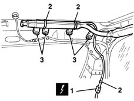
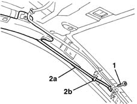
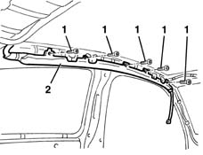

5580C52 AIR BAG MODULE with BLIND (one- ) (head),bag left or right - R.R. with interfering components removed
- Path
- Procedures > 55 ELECTRICAL EQUIPMENT > 5580 SPECIAL ACCESSORIES > 5580C air bag system > 5580C52 AIR BAG MODULE with BLIND (one- ) (head),bag left or right - R.R. with interfering components removed
- Kind
- repair procedure (removal / refitting; the operation number is the code)
- Applies to
- all engines; all production periods
- Interactive page
- https://sloeber94.github.io/elrnDB-lYpsln/en/#/2429458
Applies to: all engines; all production periods
Place the ignition key in the OFF position and extract it;
- Disconnect the battery leads and insulate.
- Wait for 10 minutes before continuing.
Applies to: all engines; all production periods
 Removing
Removing
 Refitting
Refitting1. Working at the rear of the vehicle, disconnect the electrical connection.
 | Name | Connector |
|---|---|---|
1 | Driver's Head Bag |
| Name | Connector |
|---|---|---|
1 | Passenger Head Bag |
2. Undo/cut the retaining bands
3. Undo the bolts.

Applies to: all engines; all production periods
1. Working from the front of the car, undo the bolt.
2. Release the link (2a) from the retainer (2b).

Applies to: all engines; all production periods
1. Undo the curtain retaining nuts
2. Remove the curtain airbag module

Applies to: all engines; all production periods
Refitting
RemovingObserve the following precaution.
Detach the removable part of the adhesive label from the new module and put it in a specific file recording the vehicle details (model, registration data, chassis no.) and the serial no. of the old module. This file should be kept for future checks.
A new label is supplied together with the module, to be stuck on top of the existing one. However, it should first be perforated to indicate the month and 14 years after the year when the module is fitted (e.g. 2017 will correspond to 2003).
Fit the Window Bag module.
Tighten the bolts fixing the curtain.
 | Fastening | Component | Ø | Value (daNm) |
|---|---|---|---|---|
- | Bolt | HEAD BAG CURTAIN | M6 | 0.8 |
Engage the front rod in the retainer.
Tighten the front link retaining bolt
| Fastening | Component | Ø | Value (daNm) |
|---|---|---|---|---|
- | Bolt | HEAD BAG FRONT ROD | M6 | 0.8 |
Tighten the bolts fixing the rear pipe.
| Fastening | Component | Ø | Value (daNm) |
|---|---|---|---|---|
2 | Bolt | HEAD BAG UNIT | M6 | 0.8 |
Connect the electrical connection and fit the band.